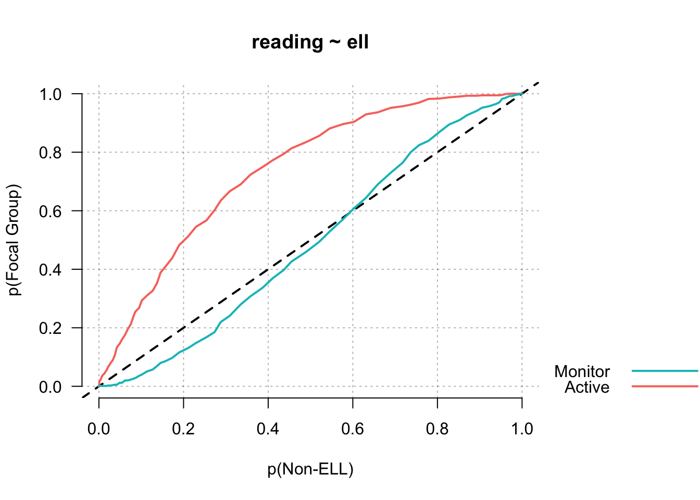

esvis: Part 1
Contents
This is the first of a series of posts to introduce my new esvis R package, why I think it’s important, and some of its capabilities. As of this writing the current version on CRAN is 0.0.1, so it’s obviously still fresh and may have some bugs. If you find any, please let me know. You can install the package like you would any other on R
install.packages("esvis")
or if you’d prefer the sometimes buggy but more feature-heavy development version, install from github with devtools.
# install.packages("devtools") # only if not previously installed
devtools::install_github("DJAnderson07/esvis")
Overview
The overall purpose of the package is to visualize distributional differences. Often, we think about distributional differences in terms of effect sizes, which is certainly a good method, but these effect sizes are not without limitations. They are summary indicators of the distributional differences, generally providing a standardized measure of the difference between the means. Cohen’s d is perhaps the most common effect size metric, and is defined by the difference in the means between two distributions divided by the pooled standard deviation.
In some cases, we may be interested in the difference between two distributions at other points in the scale, which may be more relevant to applied use. For example, students in public school systems across the United States take statewide achievement tests in reading and mathematics. These scores are evaluated relative to performance level classifications (e.g., “needs improvement”, “proficient”, “advanced”). In these cases, it may be more policy-relevant to evaluate the differences between the distributions (different groups of students) at these cut points, rather than at the means. However, all of this comes with a caveat - if the two (or more) distributions are both normally distributed with the same variance, the difference at the means will equal the difference at any point in the scale. In this case, we could just as well evaluate differences at the mean and we’d understand the difference at the cut-point for “proficient” or any other point on the scale. But, real data rarely work out this way and sometimes important and meaningful differences can occur at different point in the scale. In this case, any effect size measure will be at least somewhat insufficient, because it is necessarily trying to summarize the entire difference between the distributions with a single number - but this difference may depend up on the scale location.
All of the previous paragraph is really just a big run-up to hopefully convince you that if you’re interested in the difference between any two empirical distributions, it’s likely helpful to visualize those differences, because you may find that the difference is not consistent across the scale. This can occur when the shape of the distributions differ, and/or when the variance between the two distributions are more that moderately different.
PP plots - and implementation in esvis
One way to visualize distributional differences is through probability-probability, or PP, plots. PP plots map the empirical cumulative distribution function (CDF) from a reference distribution to the empirical CDF of a focal distribution. These CDFs can be thought of in terms of percentile ranks - how different is the 10th percentile for students who are and are not eligible for free or reduced price lunch? If there is no difference between the distributions, the PP Curve will follow a diagonal line, usually displayed on the PP plot for reference. The extent to which the curve deviates from the reference line relates to the magnitude of the differences between the two distributions. Importantly, this allows for the investigation of the size of the distributional differences across the full scale.
The esvis package will produce PP plots quickly using standard and consistent
syntax of the type pp_plot(outcome ~ grouping_factor, data). One of the nice
features of the package is that it the grouping factor can have many levels and
the package will choose a reference distribution and plot multiple lines
relative to that single reference distribution (which can be changed easily).
One of the datasets that ships with the development version (soon to be on CRAN)
is called benchmarks and includes seasonal (fall, winter, spring) assessment
data on students in Grades 3-5. These are synthetic data, simulated from
empirical data. The properties of the synthetic data match the empirical data
well. Below is a sample of the data
sid cohort sped ethnicity frl ell season reading math
332347 1 Non-Sped Native Am. Non-FRL Non-ELL Winter 208 205 400047 1 Non-Sped Native Am. FRL Non-ELL Spring 212 218 402107 1 Non-Sped White Non-FRL Non-ELL Winter 201 212 402547 1 Non-Sped White Non-FRL Non-ELL Fall 185 177 403047 1 Sped Hispanic FRL Active Winter 179 192 403307 1 Sped Hispanic Non-FRL Non-ELL Winter 189 188
To produce a basic PP plot evaluating the differences in reading achievement between students who are and are not eligible for free or reduced price lunch, we would run
library(esvis)
pp_plot(reading ~ frl, benchmarks)

Note that I’m using the development version, which looks slightly different than the current CRAN release. The plot is annotated with some additional features that I’ll explain more fully in a later blog post. But for now, we can see that there is a sizable difference between these groups, and that difference appears relatively consistent.
Let’s evaluate another relation, this time looking at the different English language learner (ELL) classifications. This dataset includes three ELL designations: (a) active, (b) monitor, and (c) non-ell. Active refers to students currently receiving services, monitor refers to students who previously received services, and non-ell refers to students who never received services. In the code below, I’ve added one additional argument to force the reference group to be students who never received ELL services.
pp_plot(reading ~ ell, benchmarks, ref_group = "Non-ELL")

Notice in this plot there is actually a reversal of the effect for monitor students. On the lower end of the scale, Monitor students are actually out-performing non-ELL students, but this effect reverses at the top of the scale. A summary measure would not provide this type of information, but it may be incredibly valuable for theory development. For example, for this finding we may theorize that students with very low achievement receive a benefit from essentially any additional attention, even if that attention is not directly related to academics.
That’s it for now. Future posts will talk about other visualizations, as well as the estimation of different kinds of effect size. I’ll likely have at least one post discussing some extensions to the basic plots produced above.
Author Daniel Anderson
LastMod 2017-11-05